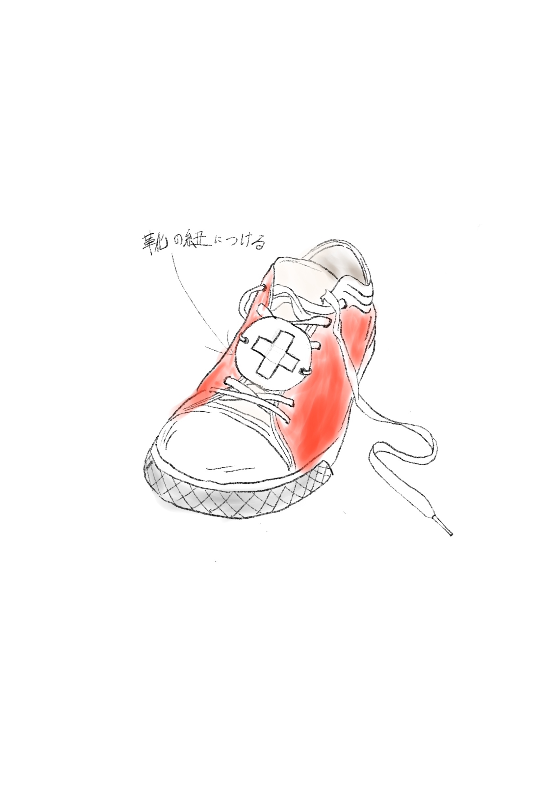

班でのテーマ
一人ひとり観察をしている中で気になった人のスケッチを出し合ったところ、
右と左で違うもの履いている人がいた。
最初はただ単に履き間違えてしまっただけだと思ったが、
話し合いをしている内に僕たちの班の中で、その人は怪我をしていて
同じ靴が履けなかったのではないかと推測した。
左右で違う靴を履いていた人が、本当に怪我をしていたかは分からない。
だからこそ本当に怪我をしている人が周りの人に分かってもらえるようなものが
あればいいと感じた。
そこでこんなものを考えました

僕はこのようなものが靴に付いていれば、知らない人も
怪我をしていることが直感的に感じることができるのではないかと思った。

実際に作ってみると、形状が靴に合わなくてつけると違和感があった。
感想
今回この怪我のマークを作ってみて、形状が合わなくて違和感があるという改善するべきポイントを見つけることができたし、何よりアイデアが良かったと思う。
今回は観察から、その人の見えなかった部分を予測して、どうしたらその悩みを解消できるか、
その人になったつもりで考えることができた。